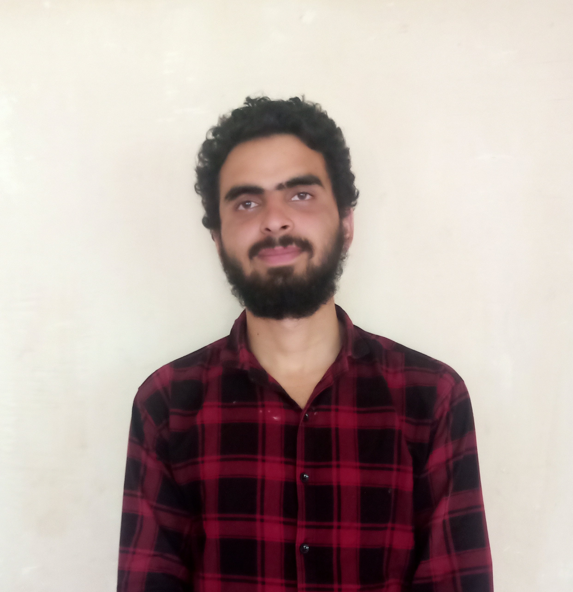

About Me

I’m Salis Amin Lone
I design and build privacy‑first, mobile‑friendly tools for real people and small businesses. My projects are resilient, secure, and offline‑ready — optimized for Android and low‑resource environments.
I’m a developer with a Diploma in Computer Science and currently pursuing my B.Tech in Computer Science. My journey has been shaped by a passion for building applications and websites that combine technical precision with creativity.
I believe in designing solutions that are intuitive, reliable, and impactful. Every project I take on reflects my commitment to growth, learning, and delivering meaningful experiences for users.